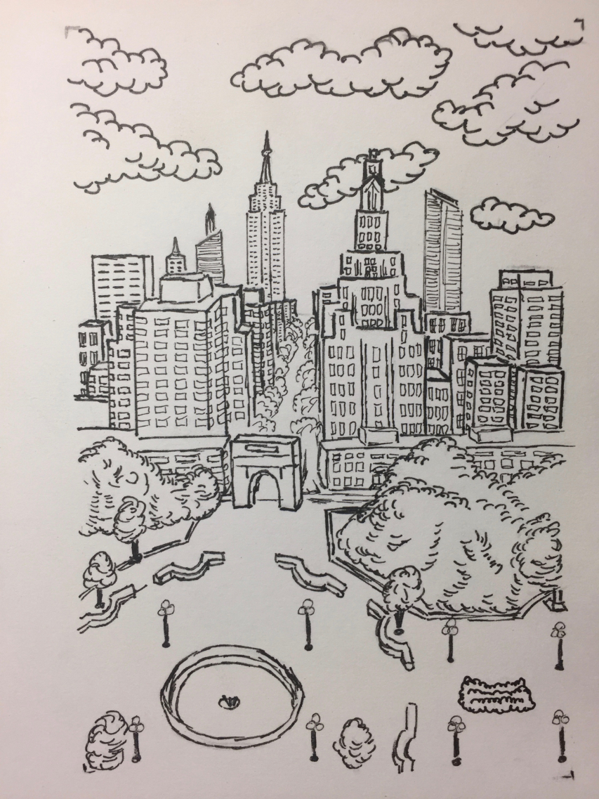
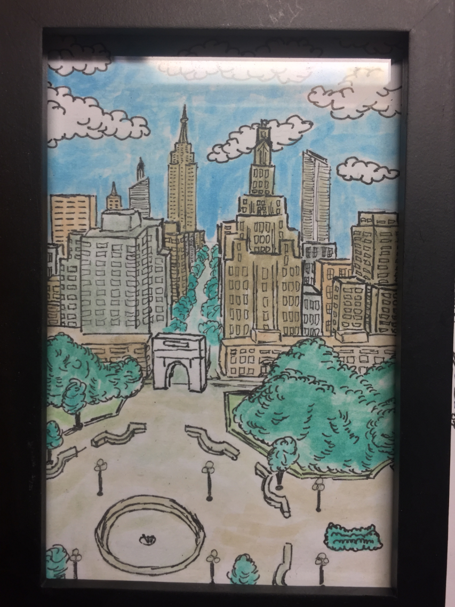
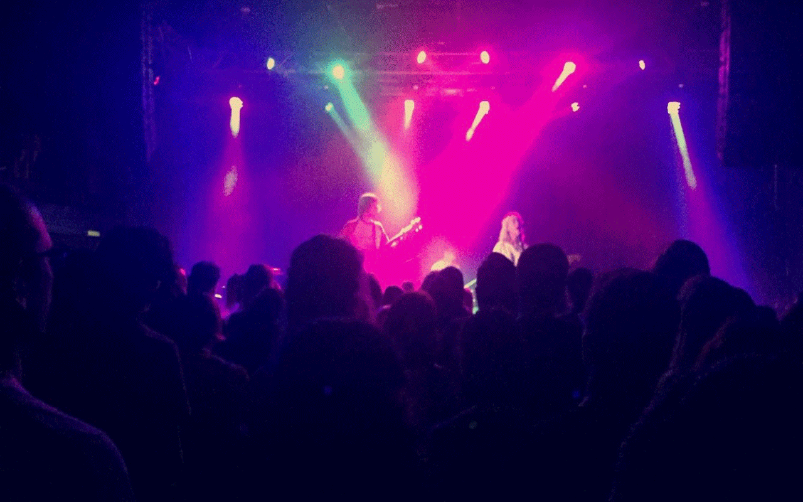
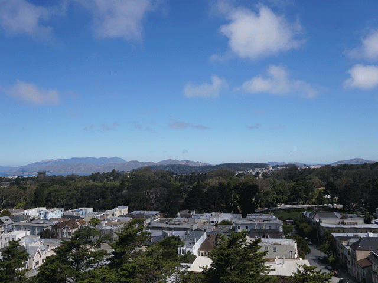

- Hunt for the World's Best Views
- Selected landscape photos from hikes and travels.
- Drawn Views
- Ink and watercolor paintings of various landscape photos I have previously taken.
- Animated Gifs
- Timelapsed photos made into animated gifs.
- RPi Alexa
- Implementing Amazon's cloud-based voice service, Alexa, on a Raspberry Pi.
- Automated Email
- Programmed an automated email response system with camera integration.
- Website
- Programming my own website from scratch.
- Terminal Workshop
- Fun exercises to learn the basics of the Unix Terminal.
- Pong
- A simple Java pong game using Processing and PApplet.
- Sticky
- A challenging text-based Python pick up sticks game.
Hunt for the World's Best Views
Around 2012 I began an effort to capture landscape views from various hikes and travels. Most of these photos come from hikes in California or my time in New York. Other photos are from travels around the U.S. and the world. More photos can be found on my tumblr blog at best-views.tumblr.com.
A sunset view of the Golden Gate Bridge from Battery Godfrey in San Francisco, California.
 A view of lower Manhattan from the top of the Empire State Building in New York City on a clear summer's day.
A view of lower Manhattan from the top of the Empire State Building in New York City on a clear summer's day.
 A beautiful view looking towards the Marin Headlands from McNee Ranch State Park, CA.
A beautiful view looking towards the Marin Headlands from McNee Ranch State Park, CA.
 Looking down one of the many canyons near Junction View on highway 180 in Kings Canyon National Park, CA.
Looking down one of the many canyons near Junction View on highway 180 in Kings Canyon National Park, CA.
Drawn Views
In order to create meaningful birthday gifts for my friends without spending a lot of money, I decided to make something for them. I chose to draw and watercolor 4 inch by 6 inch framed pieces based on previous photos I had taken that had a connection to the specific friend I was making it for. In this way the piece could be tailored to the specific friend, maintain a minimalist presence, and be built off my previous work. In this project I show the image the piece is based off, the drawing, and the final watercolor. More pieces from this project can be found on my tumblr blog at drawn-views.tumblr.com.
 A view up Fifth Avenue in New York City for my Best Views project.
A view up Fifth Avenue in New York City for my Best Views project.
The previous photo was then used to make this ink drawing.
The ink drawing was then watercolored to produce this final piece in its frame.
Animated Gifs
During photo shoots I thought it would be interesting to start capturing some timelapses. I decided to present these collected images in the form of animated gifs for easy sharing over the web. I haven't made enough of these to elicit creating a blog for them, but I have my favorite ones shown below.
The band plays in a concert at Neumos, Seattle.
A view looking north over the Inner Sunset neighborhood, San Francisco.
Watching the cars driving through the Noe Valley neighborhood, San Francisco.
The clouds passing over Mt. Tamalpais, California.
RPi Alexa
Access to a basic version of Amazon's Alexa serivce is available for free through Amazon Developer Services. I implemented this tool on my own Raspberry Pi, with a microphone and speaker attached.
Because this project is relatively easy to do, I plan to create a walkthrough in the near future. Anyone interested in trying this out will be able to easily follow along and have their own basic Alexa set up in no time.
Automated Email
I wrote some programs that can automatically read and respond to your emails. There are many possible uses for types of programs including automated responses to specific messages, being able to control and get notifications on processes being run on remote computers, and pre-written emails scheduled to be sent later.
Some basic examples for your configuration purposes are on my GitHub repository at github.com/KEYS248/simple-email-parsing.
My current setup with this concept has a simple camera integration and continuously reads through inbox emails until it recieves an email requesting a current picture of the room. At this point it takes a picture of the room and attaches that image in a response email to the person requesting. This system can easily be developed further to build a simple home security or monitoring system that continuously takes images of an area and stores them online for remote access.
Website
I decided to create a space where I could more neatly organize and showcase my various projects. I also wanted to learn some HTML and CSS on my own over a school break using the school's access to Lynda.com.
I watched a number of their videos, purchased a domain name on Google Domains, wrote my HTML and CSS, and hosted my website on GitHub Pages. The outcome is this current website you are on. The source code is open on GitHub at github.com/KEYS248/keys248.github.io
GitHub Pages is a great way to host your own website in a safe and open way. Because of this I plan to create a walkthrough in the near future in order to guide people through creating their own site using this tool.
Terminal Workshop
As part of a club meeting for the NYU BUGS Open Source club, I created some entertaining exercises to teach the basics of the Unix Terminal. The workshop is on GitHub at github.com/BUGS-NYU/TerminalWorkshop.
I would say it is easier to learn if you already have some computer science experience or are comfortable with computers in general. Either way, it is without a doubt a very powerful tool for many purposes and worth knowing.
I have come to love command line interfaces and would highly recommend first starting out by learning some of its history through a Google Slides presentation I've created at bit.ly/BugsTerminal. After this I would recommend continuing on to the exercises.
Pong
As part of an assignment for one of my earliest computer science courses, we were tasked with creating a very simple Java game using Processing and PApplet tools. I found my game entertaining so anyone interested is free to play with it and it may also help them get a better understanding of how Processing and PApplet work. The repository can be found at github.com/KEYS248/pong-papplet.
Sticky
This was the first program I was proud of and it was a product of my first ever computer science class. The assignment was to create a simple text-based pick up sticks game with an extra credit of making it smart. There is an algorithm to the game and my program makes use of it. The chances of success are 25% if you know the algorithm, but much lower without. Try it out at github.com/KEYS248/sticky.